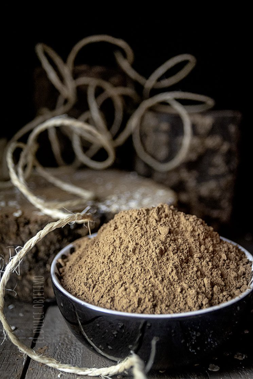

GALLETA DE AVENA Y ALGARROBA
Ingredientes:
- 2 huevos tamaño L.
- 100 gr. de harina de Algarroba.
- 230 gr. de copos de Avena.
- 150 gr. de azúcar Panela.
- 150 gr. de aceite de coco o de oliva suave.
- ½ cucharadita de levadura en polvo.
- 1 pizca de sal.
- 1 cucharadita de pasta de vainilla o la raspadura de una vaina.
Preparación:
- Precalentamos el horno a 200º con ventilador (si lo trae incorporado nuestro horno), de esta forma podremos hornear dos bandejas a la vez. Preparamos nuestras bandejas de horno con papel de hornear.
- Batimos bien los huevos con el azúcar para que se integren correctamente.
- Vertemos poco a poco el aceite y lo mezclamos bien.
- Incorporamos la esencia de vainilla.
- Mezclamos la harina con la levadura y la sal y la incorporamos a nuestra mezcla anterior, si queremos podemos usar la pala de nuestra Kitchen para que quede muy bien mezclado.
- Por último incluimos los copos de avena y mezclamos con una espátula hasta que nos quede una pasta uniforme.
- Para preparar las galletas y que me salgas todas más o menos parejas yo utilizo una cuchara de bolas de helado de tamaño pequeño, pero si no, basta con hacer como bolas del tamaño de una albóndiga y chafarlas un poco.
- Las colocamos en nuestra bandeja con unas distancia prudencial entre ellas y las llevamos al horno por un tiempo aproximado a unos 12 – 14 minutos.
- Mucho cuidado en el tiempo de horneado puesto que al ser de un color muy negro no se aprecia a simple vista cuando se nos están pasando y si se nos queman un poco, pueden llegar a amargar.
- Una vez horneadas, las sacamos y las dejamos enfriar sobre una rejilla y listas para consumir.
